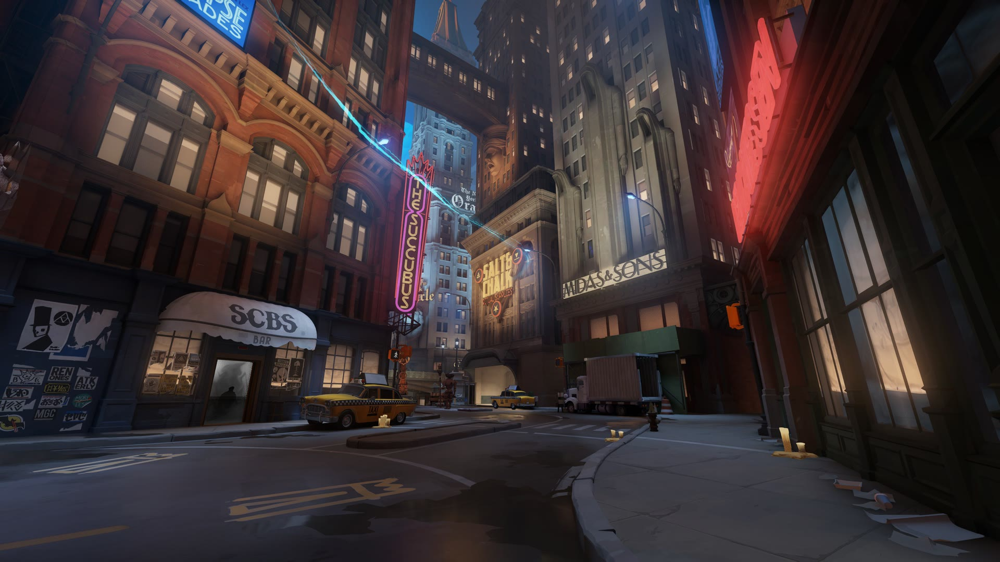

Deadlock
Deadlock is an upcoming third-person shooter and multiplayer online battle arena (MOBA) game developed and published by Valve. It is set in an alternate urban fantasy New York in the 20th century, featuring battles between two teams of six heroes trying to destroy each other's "Patron" gods as part of an occult ritual. Initially known as Neon Prime, Deadlock was leaked to the public in May 2024, and its Steam page was published in August. Although it has since remained an invite-only closed beta, players may freely share invites, and the game reached a peak concurrent player count of over 260,000 in October 2026.
...